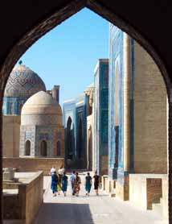
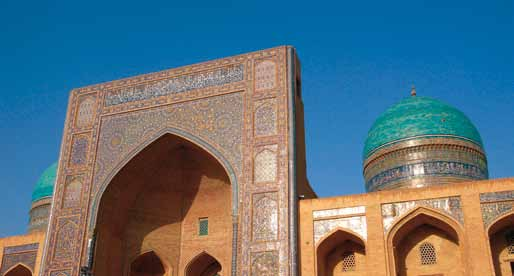
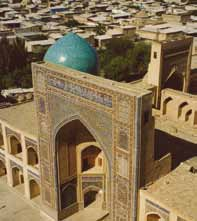

SAMARKAND
KARAVANEBYEN
På vores rejser besøger vi den mytiske karavaneby Samarkand, en af verdens ældste kulturbyer. I Samarkand byggede den berømte og berygtede krigsherre Timur Lenk, et imperium, der strakte sig over store dele af Centralasien. Lenk bragte kunstnere og håndværkere fra de erobrede lande til Samarkand for at bygge de fan-tastiske bygningsværker, vi den dag i dag kan nyde i fulde drag.

BUKHARA
SILKEVEJENS MYSTIK
Allerede for 2.000 år siden var Bukhara et kulturcentrum på Silkevejen, og på vores rejser har vi god tid til at opleve denne spændende by med sin imponerende arkitektur side om side med simple lerhuse. Der er en sær-lig stemning med de skyggefulde alléer, der snor sig langs de ældgamle huse, og i basaren finder vi farvestrålende Ikatvævede stoffer, tæpper og keramik.Kunsthåndværkere faldbyder fint forarbejdede varer i den gamle silkebasar, og de lokale mænd hygger sig med et spil domino.

KHIVA
ØRKENBYEN
På vores rundrejse besøger vi ørkenbyen Khiva, smukt omkranset af høje, tykke bymure. Byen har som de andre gamle byer i Usbekistan, en række imponerende madrassaer. Vi får lejlighed til at indsnuse den særlige stemning i de helt specielle ørkenlandskaber og i de gamle kul-turcentres basarer og tehuse.Byen er delt i to, den indre by (Ichan Kala) og den ydre by (Dishan Kala). Den ydre by er omkranset af bymuren med 11 porte, mens den gamle bymur til indre by går tilbage til den tyrkiske erobring i 1000-tallet.

NUKUS
ØRKENENS LOUVRE
I den vestlige del af Usbekistan ligger byen Nukus med det berømte Oleg Savit-skij Museum, også kaldet Ørkenens Louvre. Museet er enestående i denne del af verden og har en af verdens største samlinger af sovjetisk avant garde kunst side om side med den specielle form for socialrealistisk kunst, som blev glorificeret af sovjetstaten.